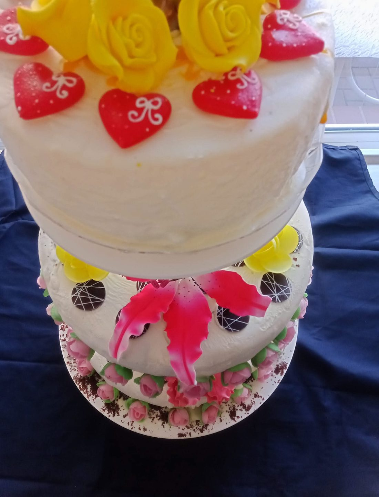

💍 Eistorte für die Hochzeit

Einfach zu bauen, mit einer Bedingung: der Schockfroster
Eine mehrstöckige Hochzeits-Eistorte ist einfach zu bauen, aber der Schockfroster ist Pflicht. Man arbeitet immer mit Silikonformen in verschiedenen Größen, eine für jede Etage, und die Methode bleibt die des Hauptleitfadens: dünne Schichten, Schockfrosten, Glasur.
Unten findest du einige mehrstöckige Torten, die ich gemacht habe, und meine Tipps zu Sorten, Glasur und Dekoration.
📸 Die Torten
Einige der Hochzeits-Eistorten, die ich zubereitet habe, mit den verwendeten Dekorationen.



Welches Eis für welche Etage
- Die größte Torte oder Basis: ein Eis mit wenig Zucker, am besten vegan.
- Die zweite Etage: ein Fruchteis oder ein gemischtes Eis.
- Die erste Schicht: eine Mischung aus Cremeeissorten.
Eine Idee für die Sorten
Basistorte: veganer Joghurt mit karamellisierten Fruchtstückchen als Variegato, dann zwischen den Schichten ein weiteres Variegato, darauf ein Erdbeereis und obenauf dunkle Schokolade.
Mittlere Torte: eine Fruchtmischung, ohne Melone, Wassermelone, Banane und Waldfrüchte, weil sie zu weich sind.
Schockfrosten und Glasur
Die Temperatur der Torte muss gut heruntergeschockt werden: so hält sie länger. Als Glasur ist weiße Schokolade am besten, sie lässt sich färben oder aromatisieren. Schokolade verzögert außerdem das Schmelzen des Eises.
Dekoration
Ist die Torte glasiert, kann man sich bei der Dekoration austoben. Der Trick: trockene, nicht cremige Dekoration verwenden. Auf den Fotos sieht man Blumen aus Zuckerpaste, Oblatenrosen, Schokoladenscheiben und Schokoladenspäne.
Was man vor der Auftragsannahme fragen sollte
- Datum, Uhrzeit des Anschnitts und Zahl der Gäste (davon hängen Durchmesser und Zahl der Etagen ab).
- Eissorten, Allergene und Unverträglichkeiten (laktosefrei, glutenfrei, vegan).
- Farben und Thema der Dekoration, gegebenenfalls eine Aufschrift.
- Wohin geliefert wird, ob es einen Froster gibt und wer die Torte entgegennimmt.
Weitere nützliche Seiten
💬 Eine Torte für deine Hochzeit?
Schreib uns Datum, Gästezahl und die Sorten, die dir vorschweben: wir geben dir kostenlos Tipps zu Etagen, Basen und Dekoration.